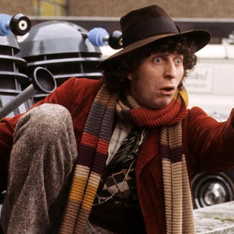

Where to Start
With over 50 years of episodes from 38 seasons of television (not counting the multitudes of spin-off media like book, comics, and audio dramas), it can be a little overwhelming trying to figure out where to start. Do you start at the very beginning with the first doctor? Do you pick up the series from the current season? Or do you see which doctor strikes your interest and start there? The simplest answer is that all of these approaches are possible and that they might lead to a rewarding experience with the show. The episodic nature of the program allows for individual episodes to stand on their own to act as potential hook for new audiences. However, this approach might not be for everyone.
The best place to start for newcomers would definitely be the first series of the revival from 2005. This marks the beginning of the current incarnation of the show and was designed to be completely accessible to general audiences. However, the special effects can be a little dated, so if you are someone who cares a great deal about production values, I would recommend starting with Series 5 of the revival from 2010. This is the first season of the Eleventh Doctor, as well as the first to be shot in high definition. It is an excellent self-contained season and perfect for newcomers. Then, if you are truly invested in the show at this point, you should go back and revisit series 1 and go forward from there.
But what about the original show? If you’re all caught up on the current series, and craving more Doctor Who, where do you start with the classic run? This is a little more complicated, as the original show, while great on the whole, has a tendency to be very off-putting to newcomers not familiar with old British television. The stories are longer and frequently repetitive, and feature cringe-inducing and hilarious goofs. However, for fans of campy and high concept science-fiction, this might be the show for you. The fourth Doctor, Tom Baker, is probably the best starting point for this series (he’s iconic for a reason), however, from there it’s up to you. There really aren’t ongoing plot threads to keep track of, almost every story is self contained, it’s just a matter of deciding which ones sound interesting to you.
